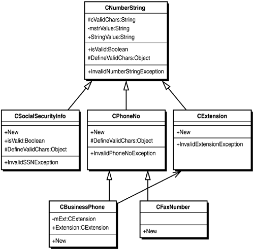

Add a new class file to your project by right-clicking on the project in the Solution Explorer window and selecting Add Class from the Add submenu. Name the new class CCustomerID.vb.
Copy the DoesCustomerIDExist and ValidateCustomerID methods from the CCustomer class into the CCustomerID class. Rename them Exists and Validate, respectively.
Copy the InvalidCustomerIDException from CustomerClass.vb and paste it inside the CCustomerID class. This makes your exceptions directly related to the CCustomerID.
One gap in splitting off the CustomerID property into its own class is that some parts of your application might want a read/write CustomerID property, whereas others, such as the CCustomer class, need a ReadOnly property. Instead of having a Boolean set to lock the property, a more flexible way is to add an event to your class that is called before setting the property, allowing a containing class to cancel the change.
Public Event BeforeUpdate(ByVal pstrCustomerID As String, ByRef pfCancel As Boolean)
Now add a new property called CustomerID to the CCustomerID class, as shown in Listing 9.42. This property should raise the BeforeUpdate event, and if the changes are not cancelled, call the Validate method and throw an InvalidCustomerIDException if the CustomerID is invalid.
Listing 9.42 CCustomerID.vb: The CustomerID Property of the CCustomerID Class
Property CustomerID() As String Get Return mstrCustomerID End Get Set(ByVal Value As String) Dim fCanceled As Boolean RaiseEvent BeforeUpdate(Value, fCanceled) If Not fCanceled Then mfValid = Validate(Value) If mfValid Then mstrCustomerID = Value Else Throw New InvalidCustomerIDException(Value) End If End If End Set End PropertyThen add a new constructor that accepts a CustomerID as a parameter. That constructor, shown in Listing 9.43, should call the property statement, which will handle validation.
Listing 9.43 CCustomerID.vb: The Constructor for the CCustomerID
ClassPublic Sub New(ByVal pID As String) Me.CustomerID = pID End SubYou're almost finished with the CCustomerID class, except for one subtle issue: pointers. Everything you've written in this chapter so far has used base datatypes, so you haven't had to worry about copying values between function calls. But objects work differently than base datatypes do.
The issue is with ByVal and ByRef. With base datatypes, the distinction is fairly straightforward: ByVal passes a copy of the value of the variable to the function. The called function could do whatever it pleased to the passed value without impacting the value of the variable in the calling function. ByRef passes the called function a pointer instead of the value, so any change made to the variable in the called function is made to the variable in the calling function.
With objects such as CCustomerID, it's completely different. Whether you use ByVal or ByRef, you're still working with a pointer. The called function will always modify the object that the calling function passes.
The difference is in reassigning the pointer. ByVal passes a pointer to an object. If the called function changes the pointer to a new object, the calling function will still point at the original object. ByRef passes a pointer to a pointer to an object. If the called function changes the pointer to a new object, the calling function will now point at the new object instead of the original object.
The point(er) here is in the constructors. You want to provide a way for other developers to create copies of the class easily, or you might end up with the same CCustomerID object being used simultaneously in a potentially conflicting fashion. The solution? Add a constructor to the CCustomerID class that accepts a CCustomerID object as a parameter, as shown in Listing 9.44.
Listing 9.44 CCustomerID.vb: An Object-Based Constructor for the CCustomerID Class
Public Sub New(ByVal pID As CCustomerID) ' Both ByVal and ByRef pass object pointers, so if you ' want to create a new CustomerID instance based on an ' existing instance, you need to copy the values of the ' base datatypes to a new instance. Me.CustomerID = pID.CustomerID End SubUpdating the CCustomer class is not difficult, but it does require many small, similar changes, including the following:
Retyping variables
Removing code validating CustomerIDs and related exception throwing
Calling CCustomerID's object-based constructor from Listing 9.43 each time a CCustomerID object is passed into a CCustomer object
Adding .CustomerID after every CCustomerID variable where the string value is needed
The constructor in Listing 9.45 that you use to create new customers in the database is a good example of all of these changes.
Listing 9.45 CCustomerID.vb: An Excerpt of a CCustomer Constructor as Modified to Use the CCustomerID Class
Public Sub New(ByVal pCustomerID As CCustomerID, ByVal pCompanyName As String) ' Change A: retyping variables ' Instead of accepting a string that has to be validated, ' this constructor accepts a CCustomerID object that by ' definition is valid. If pCustomerID.Exists Then ' Change B: removing code validating CustomerIDs ' If you recall, there used to be an additional condition ' in this If... Then that checked the length of the CustomerID. ' Now, the CCustomerID guarantees a valid CustomerID. mdsCust = New dsCustomers() mfNew = True ' Change C: using the object-based constructor ' Just to make sure, create a new CCustomerID object. If you ' don't, consumers of this class will retain a pointer to this ' object instance, allowing that consumer to change the value ' of the shared CCustomerID object unbeknownst to the CCustomer object. mCustomerID = New CCustomerID(pCustomerID) Me.CompanyName = pCompanyName Else ' Change D: calling the CustomerID property when you need a string. ' When you throw an InvalidCustomerIDEException, you won't necessarily ' have a valid CustomerID, so this exception has to accept a string ' instead of an object. This InvalidCustomerIDException is used to express ' that the CustomerID for the new customer already exists in the database. Throw New CCustomerID.InvalidCustomerIDException(pCustomerID.CustomerID) End If End SubTip

One way to identify all these changes is to change the type of the CustomerID property in the ICustomer interface, as well as the name of the class-level variable in the CCustomer class that holds CustomerID values. Because this will invalidate much of the code utilizing CustomerIDs, Visual Studio .NET will put a wavy blue line under the code you need to modify.
You will also need to redeclare the mCustomerID variable using the WithEvents keyword and add an event handler that cancels the change, as shown in Listing 9.46.
Listing 9.46 frmHowTo9_7.vb: Adding Event Handlers to CCustomer to Handle the CCustomerID BeforeUpdate Event
Private WithEvents mCustomerID As CCustomerID Private Sub mCustomerID_BeforeUpdate(ByVal pstrCustomerID As String, ByRef fCancel As Boolean) Handles mCustomerID.BeforeUpdate fCancel = True End SubThe next task in this section is to provide similar validation functionality for phone numbers that can be used throughout your application. At the end of this task, you will have four separate classes, all of which extend the functionality of a fifth base class. Before you begin coding so many classes, it is always a good idea to plan precisely what you want to write.
Figure 9.8 is a class diagram that describes the classes you're going to write and their relationship to each other. The class at the top of the diagram is our base class. The base class has only one purpose: It contains a method that checks a string of numbers to see whether the string has invalid characters. All of the other classes will inherit this validation method, but each class will change the definition of valid characters in the string.
Figure 9.8. A class diagram describing the classes to be developed in section 9.7.

According to the class diagram, this class has only seven members: two variables (cValidChars and mstrValue), one property (StringValue), three methods (IsValid, ThrowException, and DefineValidChars), and one member class (InvalidNumberStringException).
You might have noticed a symbol before each member declaration. This symbol refers to the accessibility of the member. A minus sign (-) means the member is Private, a number sign (#) means Protected, and a plus sign (+) means Public. If this doesn't make sense at the moment, don't worry. It will be much clearer when you see the code.
Because all of the classes rely on code in the base class, you should start by defining the CNumberString class. This class will be the most complex in this hierarchy, so you will walk through it step-by-step. First, right-click on your project in the Solution Explorer and select Add Class from the Add submenu. Name the class PhoneDatatypes.vb.
Declare the CNumberString class block, as well as the InvalidNumberStringException member class, using the MustInherit keyword, as shown in Listing 9.47. The MustInherit keyword means that the CNumberString class cannot be instantiated directly. Instead, the class must be inherited by another class for its members to be accessed.
Listing 9.47 PhoneDatatypes.vb: Declaration of the CNumberString Abstract Class
Public MustInherit Class CNumberString Public MustInherit Class InvalidNumberStringException Inherits System.ApplicationException Protected Sub New(ByVal pstrMessage As String) MyBase.New(pstrMessage) End Sub End Class End ClassA class that is declared with the MustInherit keyword is known as an abstract class, and it is best described as a hybrid between an interface and a class(see Table 9.3). Like an interface, instances of an abstract class cannot be created directly, and its methods and properties need not have code. Like a regular class, an abstract class does contain some implemented methods and properties, and even though it cannot be instantiated, it can have constructors.
Table 9.3. Visual Basic .NET Class Inheritance Permission Keywords
Keyword
Definition
MustInherit
Instances of the class cannot be created directly, and the class must be inherited to be used.
NotInheritable
The class is in a finalized state and cannot be used as a base class.
Declare the two class-level variables: cValidChars and mstrValue. Note that both variables are declared as protected. This means that the variables will only be accessible to derived classes because those classes will need to modify the list of valid characters and might need to access the string value.
Declare the DefineValidChars, IsValid, and ThrowException methods as shown in Listing 9.48. You might also want to add an Event declaration that fires before updating the StringValue property. (If you do not, you won't be able to catch changes made to properties in CCustomer; thus, you won't be able to check for the maximum length of the Phone and Fax properties.)
Listing 9.48 PhoneDatatypes.vb: Declaration of the IsValid, DefineValidChars, and ThrowException Methods
Public Sub New() DefineValidChars() End Sub Public Event StringValueBeforeUpdate(ByVal pstrValue As String, _ ByRef pCancel As Boolean) Protected Overridable Sub DefineValidChars() cValidChars = New String(9) {"1", "2", "3", "4", "5", _ "6", "7", "8", "9", "0"} End Sub Public Overridable Function IsValid(ByVal pstrNumber As String) As Boolean Dim i As Integer = 0 Dim nUBound As Integer = cValidChars.GetUpperBound(0) Dim nLBound As Integer = cValidChars.GetLowerBound(0) For i = nLBound To nUBound Step 1 pstrNumber = pstrNumber.Replace(cValidChars(i), "") Next pstrNumber = pstrNumber.Trim() If pstrNumber.Length > 0 Then Return False Else Return True End If End Function Public MustOverride Function ThrowException() As InvalidNumberStringExceptionThe IsValid method is the key to the whole thing, and is really just the ValidatePhoneNumber method from the previous section. The DefineValidChars method populates the list of valid characters. It has been separated from the IsValid method so that derived classes can easily redefine the list of valid characters without having to rewrite the IsValid method.
Both of these methods have been declared as Overrideable. This means that a derived class has the option of redefining either of these methods. In previous sections, you regularly overrode constructors when you created custom exceptions based on the ApplicationException. (Actually, constructors of a base class are never exposed as constructors of a derived class, so they are overridden by default). If you recall, you can still access the overridden constructor within your class by using the MyBase keyword. The same goes for methods: You can call the overridden method within your class by using the MyBase keyword.
The ThrowException method is declared using the MustOverride keyword (see Table 9.4), and it is an abstract method. Any class that inherits from the CNumberString class must implement this method. This works just like a method that is declared in an interface, except that you do not need to use the Implements keyword in the method declaration.
Table 9.4. Visual Basic .NET Member Override Keywords
Keyword
Definition
Overrides
The method overrides the member of the base class with the same signature.
Overrideable
The method can be overridden in a derived class.
MustOverride
The method must be overridden in every derived class.
NotOverrideable
The method can never be overridden by a derived class.
The last member to implement is the StringValue property defined in Listing 9.49. Note that properties cannot be overridden.
Listing 9.49 PhoneDatatypes.vb: The StringValue Property
Public Property StringValue() As String Get Return mstrValue End Get Set(ByVal Value As String) Dim fCancelChange As Boolean If isValid(Value) Then RaiseEvent StringValueBeforeUpdate(Value, fCancelChange) If Not fCancelChange Then mstrValue = Value End If Else Throw ThrowException(Value) End If End Set End PropertyIt doesn't look like much is going on here, but this is the most interesting member in the class. Why? This member is responsible for all data validation, including validation kicked that constructors kick off. All of the methods called in this member are overrideable, though. In other words, the IsValid method that it looks like you're calling could be any IsValid method from any derived class. And the ThrowException method isn't even defined in this class. The actual method called always will be defined in a derived class.
The simplest derivation of the CNumberString class is a class that handles phone number extensions. (You will use this as part of a BusinessPhone number class later.) A phone extension contains only numbers, so you don't need to modify the IsValid method or the DefineValidChars method. As you can see in Listing 9.50, all you need is to define an exception, a method to throw it, and a constructor that calls the constructor of the CNumberString class and the StringValue property.
Listing 9.50 PhoneDatatypes.vb: A Simple Class for Phone Number Extensions Derived from the CNumberString Class
Public Class CExtension Inherits CNumberString Public Class InvalidPhoneExtensionException Inherits CNumberString.InvalidNumberStringException Public Sub New(ByVal pstrPhoneNumber As String) MyBase.New("The phone extension specified, " & pstrPhoneNumber & ", contains invalid characters.") End Sub End Class Sub New(ByVal pstrExtension As String) MyBase.New() Me.StringValue = pstrExtension End Sub Public Overrides Function ThrowException(ByVal pstrInvalidExt As String) As InvalidNumberStringException Throw New InvalidPhoneExtensionException(pstrInvalidExt) End Function End ClassSo what's going on? The CExtension constructor calls the constructor of the CNumberString class, which calls CNumberString.DefineValidChars. Then, the string value is passed to the CNumberString.StringValue property, where its validity is checked. (If that doesn't make sense, create an instance of the class and step through it line by line.)
To take the example a step further, create a phone number class that inherits from the CNumberString class. As in the CExtension class from Listing 9.50, , you will need to declare an exception, a method to throw it, and a constructor to create the class. The only substantive change in Listing 9.51 is the addition of several new valid characters-including parentheses, periods, and hyphens-to the list of valid characters.
Listing 9.51 PhoneDatatypes.vb: An International Phone Number Extension of the CNumberString Class
Public Class CPhoneNo Inherits CNumberString Public Class InvalidPhoneNumberException Inherits CNumberString.InvalidNumberStringException Public Sub New(ByVal pstrPhoneNumber As String) MyBase.New("The phone number specified, " & pstrPhoneNumber & _ ", contains invalid characters.") End Sub End Class Sub New(ByVal pstrPhoneNo As String) MyBase.new() Me.StringValue = pstrPhoneNo End Sub Sub New(ByVal pPhoneNo As CPhoneNo) Me.New(pPhoneNo.StringValue) End Sub Public Overrides Function ThrowException(ByVal pstrInvalidPhone As String) _ As InvalidNumberStringException Throw New InvalidPhoneNumberException(pstrInvalidPhone) End Function ' This is the only substantive change. This sub redefines the DefineValidChars ' method so that when this method is called in the base class's constructor, it will ' call this method instead of the original method. Protected Overrides Sub DefineValidChars() cValidChars = New String(14) {"1", "2", "3", "4", "5", _ "6", "7", "8", "9", "0", _ "(", ")", " ", ".", "-"} End Sub End ClassWhat's going on? The CPhoneNo constructor calls the constructor of the CNumberString class, but because you overrode DefineValidChars, CNumberString.New actually calls CPhoneNo.DefineValidChars instead of CNumberString.DefineValidChars.
Tip
You can combine the CExtension and CPhoneNo classes to create a CBusinessPhone class that would be far more useful in an application of this sort. A sample of this code is included in PhoneDatatypes.vb.
Utilizing the phone number class in your existing code is a process similar to what you did to integrate the CCustomerID class in earlier in this section.
Again, you will need to do the following:
Retype variables.
Remove code validating phone numbers and related exception throwing.
Add .StringValue after every CPhoneNo variable where the string value is needed.
Calling CPhoneNo's object-based constructor from Listing 9.51 each time a CCustomerID object is passed into a CCustomer object.
More important, you will need to move the maximum length validation to event handlers, as shown in Listing 9.52. The value of the phone number-contained in the CphoneNo class-can be changed without changing the phone number property, which is just a pointer.
Listing 9.52 PhoneDatatypes.vb: An Event Handler for the mFax Variable in the CCustomer Class
Private Sub mFax_StringValueBeforeUpdate(ByVal pstrValue As String, ByRef pCancel As Boolean) Handles mFax.StringValueBeforeUpdate If pstrValue.Length <= 24 Then pCancel = False Else pCancel = True Throw New MaximumStringLengthExceededException(24, "Fax", pstrValue) End If End SubThe final code example of this chapter will take another look at the CNumberString base class and suggest another potential use for it: Social Security numbers. A Social Security number is similar to a phone number in that it is a string of numbers formatted with a limited set of characters. In the Northwind database, you did not have the option of strictly validating a phone number because you could not be sure of the specific format that the customer's country might use. A Social Security number is a different story: Two hyphens must be present at specific locations in the string. The complete CsocialSecurityNo class is defined under Listing 9.53.
Listing 9.53 PhoneDatatypes.vb: Another Extension of the CNumberString Class, This Time for SSNs
Public Class CSocialSecurityNo Inherits CNumberString Public Class InvalidSSNException Inherits CNumberString.InvalidNumberStringException Sub New(ByVal pstrSSN As String) MyBase.New("The SSN specified, " & pstrSSN & ", is not valid.") End Sub End Class Sub New(ByVal pstrSSN As String) MyBase.new() StringValue = pstrSSN End Sub Sub New(ByVal ssn as CSocialSecurityNo) MyBase.New(ssn.StringValue) End Sub Public Overrides Function IsValid(ByVal pstrSSN As String) As Boolean If MyBase.IsValid(pstrSSN) Then Dim nFirstHyphen As Integer = pstrSSN.IndexOf("-") ' An SSN must have a hyphen at index 3 and 6. If nFirstHyphen = 3 Then If pstrSSN.IndexOf("-", nFirstHyphen + 1) = 6 Then If pstrSSN.Chars(0) = "0" Then Return False Else Return True End If Else Return False End If Else Return False End If End If End Function Public Overrides Function _ ThrowException(ByVal pstrInvalidSSN As String) As InvalidNumberStringException Throw New InvalidSSNException(pstrInvalidSSN) End Function Protected Overrides Sub DefineValidChars() cValidChars = New String(10) {"1", "2", "3", _ "4", "5", "6", "7", "8", "9", "0", _ "-"} End Sub End ClassJust like the CPhoneNo example, the DefineValidChars is overridden to allow a hyphen to be valid character.
The real change is in the overridden IsValid method. First, the IsValid method for the base class (CNumberString.IsValid) is called to verify that the string only contains numbers and hyphens. Then, the string is checked to verify that the hyphens are in the proper location.
When the StringValue property is set, the overridden IsValid method in CSocialSecurityNo is called, which in turn calls the IsValid method in CNumberString.